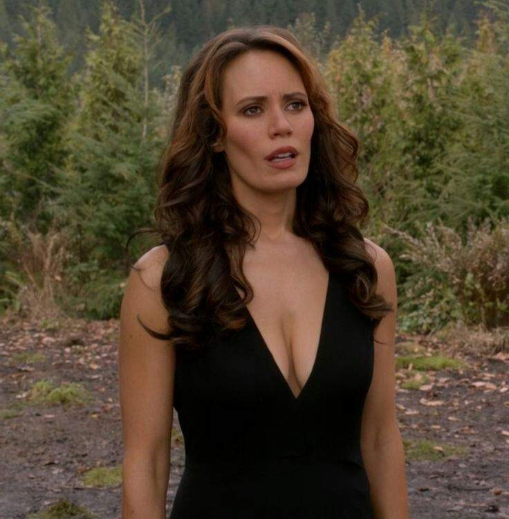

Amara, conhecida como A Escuridão, é uma entidade primordial que existe desde antes da criação. Irmã gêmea de Deus, ela representa o oposto da luz, sendo um dos seres mais antigos e poderosos do universo. Segundo a mitologia da série, Deus teve que selá-la para que pudesse criar a vida e o universo como conhecemos.
Após milênios aprisionada, Amara é libertada e busca vingança por ter sido traída. Seu retorno à Terra provoca desequilíbrio cósmico, desafiando até mesmo as leis naturais. Embora inicialmente guiada pelo ressentimento, Amara também mostra traços de humanidade e curiosidade, principalmente ao interagir com Dean Winchester.
Amara
História de Origem
Habilidades e Poderes
- Poder absoluto sobre a destruição e a entropia
- Imortalidade e invulnerabilidade
- Absorção de almas e energia vital
- Manipulação cósmica (tempo, matéria, realidade)
- Capacidade de confrontar e até superar Deus
Relações
- Deus - seu irmão gêmeo e principal opositor
- Dean Winchester - conexão misteriosa e profunda
- Rowena e Crowley - confrontos com bruxaria e Inferno
- Mundo natural - influência direta sobre vida, morte e equilíbrio universal